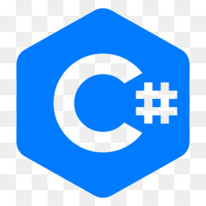
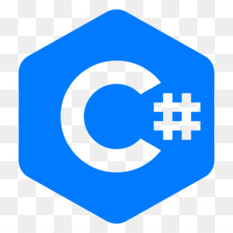

Julio Cesar Santos
Bangú, Rio de Janeiro · RJ · +55 (21) 98638-9398 · jc-santos-2@hotmail.com
Welcome to my profile! My name is Julio Cesar Santos. I am a computer technician. My professional experience since then has been in computer maintenance. For some time now, I've become a programming enthusiast. Yes, I can say that I am an aspiring software developer. I confess that I don't have a childhood memory about technology or anything like that. My interest in technology came late to me compared to so many other professionals. But I've always attempted to bring solutions and give my best in what I do.Technology has become a passion over time.
 
